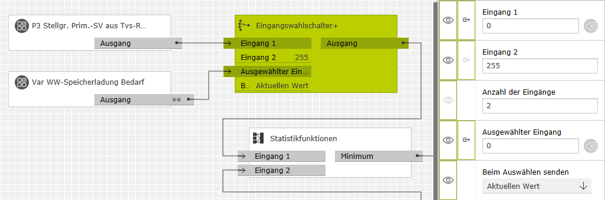

Der Eingangswahlschalter+ leitet ankommende Telegramme von einem ausgewählten Eingang unverändert auf den Ausgang weiter. Der Eingang, von dem das eingehende Telegramm weitergeleitet wird, wird über den Index-Eingang "Ausgewählter Eingang" bestimmt. Die Anzahl der Eingänge ist zwischen 2 und 50 wählbar.
Wenn sich der ausgewählte Eingang ändert, kann wahlweise sofort der zuletzt auf dem neu gewählten Eingang empfangene Wert an den Ausgang weiter gegeben werden oder der Ausgang bis zum Eintreffen eines neuen Werts auf diesem Eingang unverändert bleiben.
Bezeichnung |
Porttyp |
Beschreibung |
|---|---|---|
|
Eingang 1 |
Any |
Hier empfangene Telegrammwerte werden von dem Eingang, dessen Index am Eingang "Ausgewählter Eingang" anliegt, an den Ausgang weitergeleitet. Hinweise:
|
|
Ausgewählter Eingang |
Integer |
Bestimmt den Eingang, von dem Werte weitergeleitet werden. Der Wertebereich reicht von 0 (Eingang 1) bis n-1 (Eingang n). |
Bezeichnung |
Porttyp |
Beschreibung |
|---|---|---|
|
Ausgang |
Any |
Gibt die vom ausgewählten Eingang weitergeleiteten Telegramme aus. |
Bezeichnung |
Porttyp |
Als Eingang zuschaltbar? |
Beschreibung |
|---|---|---|---|
|
Anzahl der Eingänge |
Integer |
nein |
Legt die Anzahl der Eingänge des Bausteins im Bereich 2..50 fest. |
|
Beim Auswählen senden |
Auswahl |
nein |
Legt fest, ob beim Auswählen eines Eingangs ein Wert an den Ausgang gesendet werden soll:
|
In einer Heizungsregelung soll die Stellgröße für die Heizkreisregelung nur dann berücksichtigt werden, wenn kein Bedarf zur Warmwassererwärmung anliegt. Der Eingangswahlschalter ist dazu mit einem Eingang für die Stellgröße und einem weiteren Festwert-Eingang konfiguriert. Der Festwert ist so gewählt, dass er die nachfolgende Minimumermittlung nicht beeinflusst. Durch die Einstellung "Beim Auswählen senden: Aktuellen Wert" führt jede Änderung am Bedarf zur Warmwassererwärmung sofort zu einem neuen Ausgabewert.
